Each heatmap is derived from the same computation as the correlation figures on
Pearson (correlation). The input is
data/processed/<story>/clauses_to_segments_set.csv: one row per clause, with a
segment_ids set listing which story segments (1-based indices) that clause was assigned to.
For each segment i, a binary vector marks whether segment i appears in each clause’s
set. For every unordered pair of distinct segments, scipy.stats.pearsonr returns both the
Pearson correlation r and a two-sided p-value testing the null hypothesis that the two
binary series are uncorrelated in the population, treating each clause as an independent observation.
The PNG images here are the pearson_p_value.png outputs from plot_middle_level in
pearson_heatmap.py. They reuse tools/plot_matrix.plot_matrix with
limit=0.05: the heatmap only colors cells where p ≤ 0.05. Cells with
p > 0.05 are masked out (blank), and the color scale is fixed from 0 to 0.05 so you can compare
p-values across tiles (the "cool" colormap maps magnitude to hue). The per-story interactive HTML tables written by
the same script apply the same threshold by setting non-significant cells to not-a-number before rendering.
How to read it: a visible tile means the co-occurrence pattern between that pair of segments is statistically significant at the 5% level under the usual Pearson assumptions on binary data (see methodology on the correlation page for the vector construction). Absence of color does not mean “no correlation”; it means the evidence did not pass that threshold, which can happen when the story is short, segments are rare, or the effect size is small.
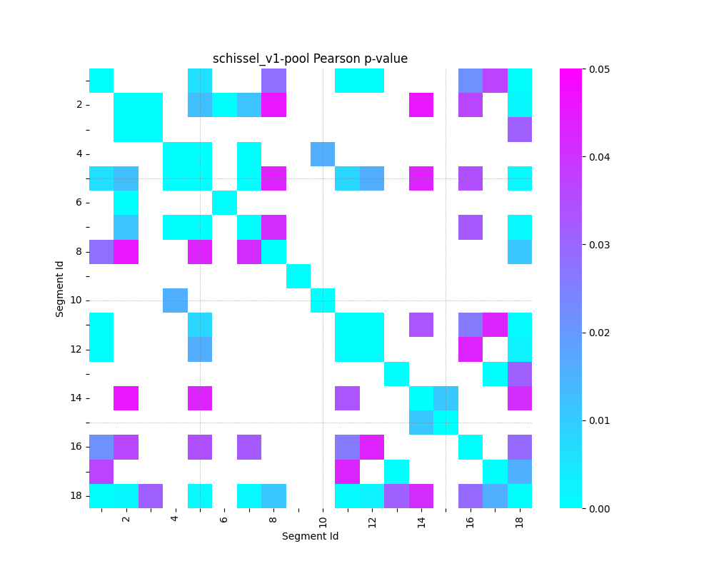
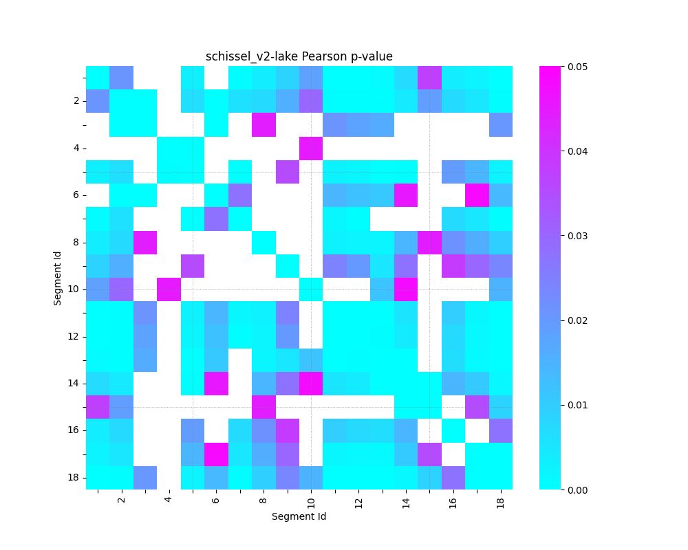
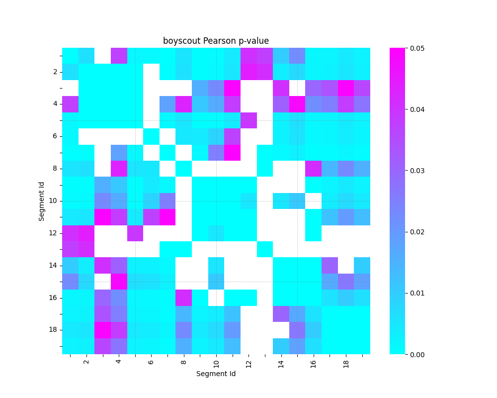
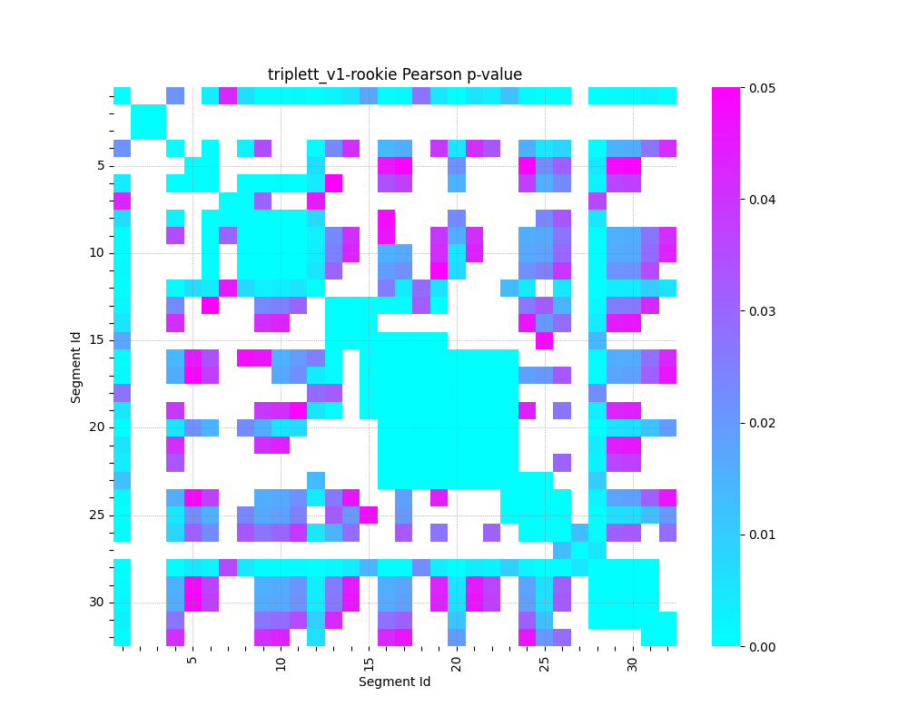
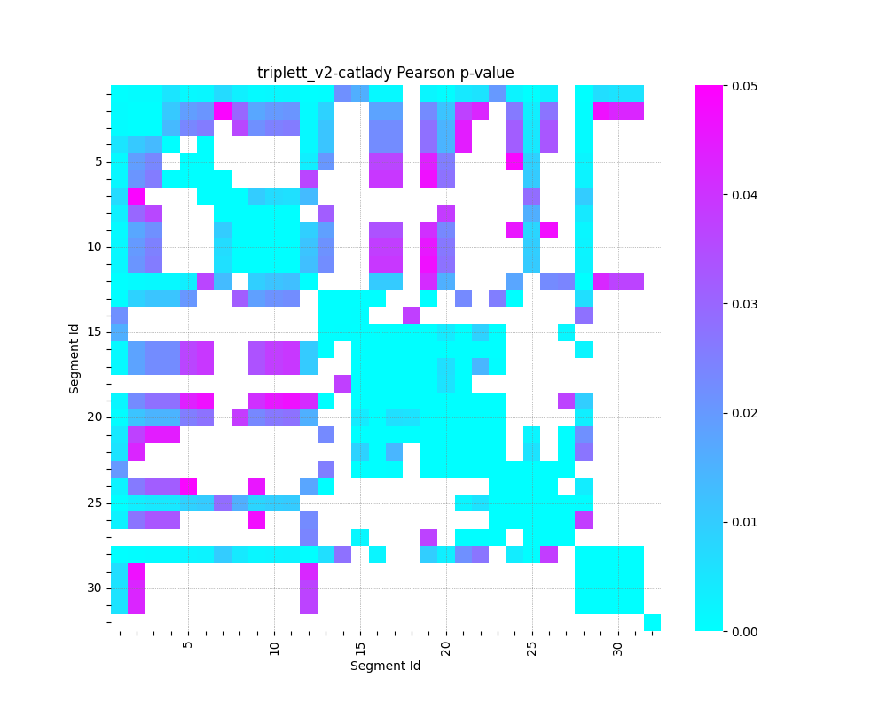
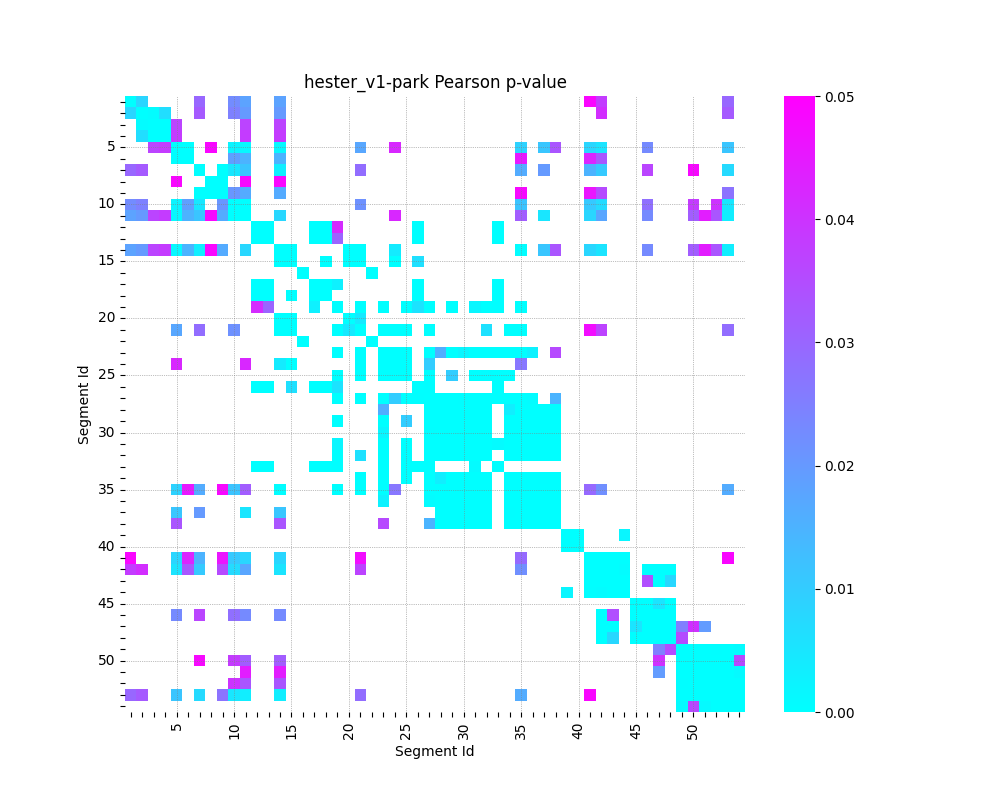
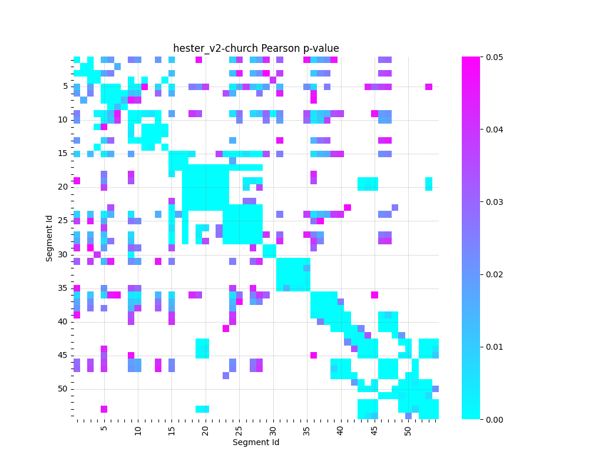
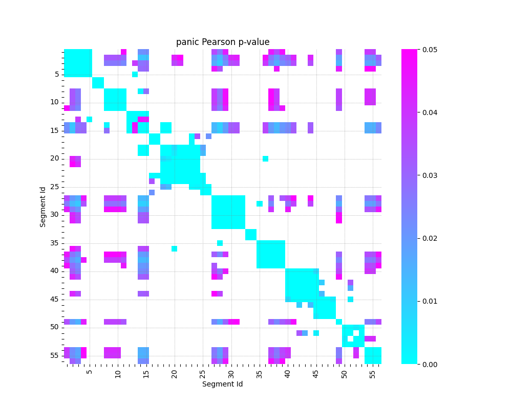
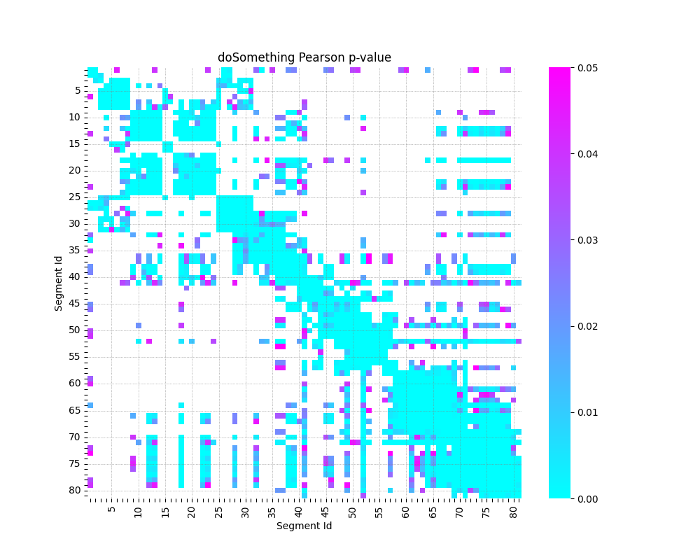
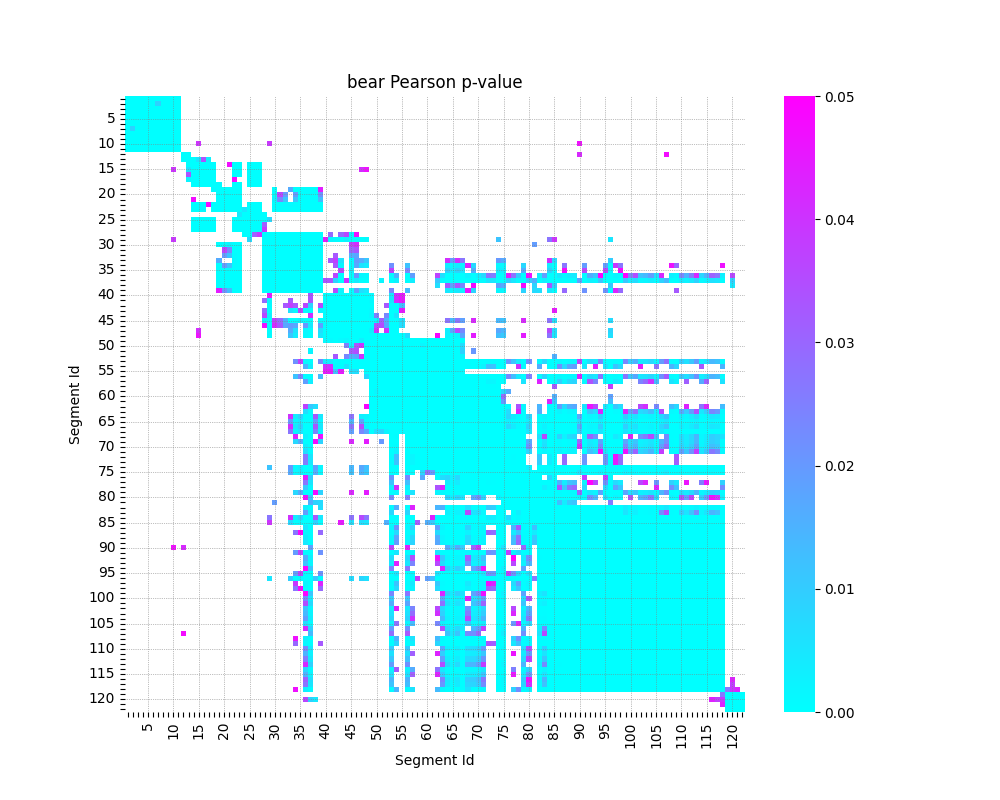
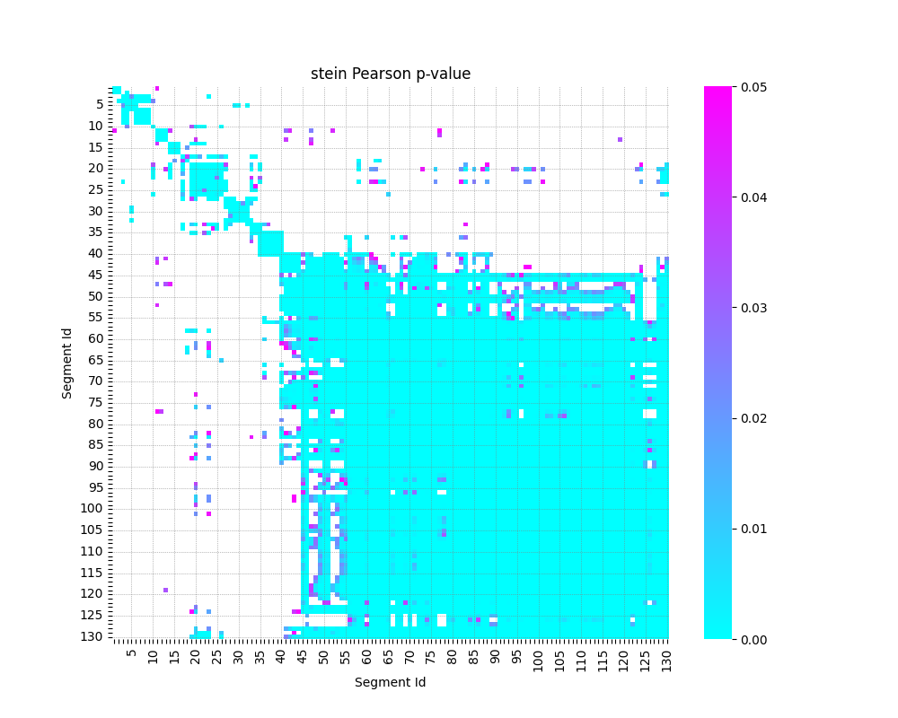
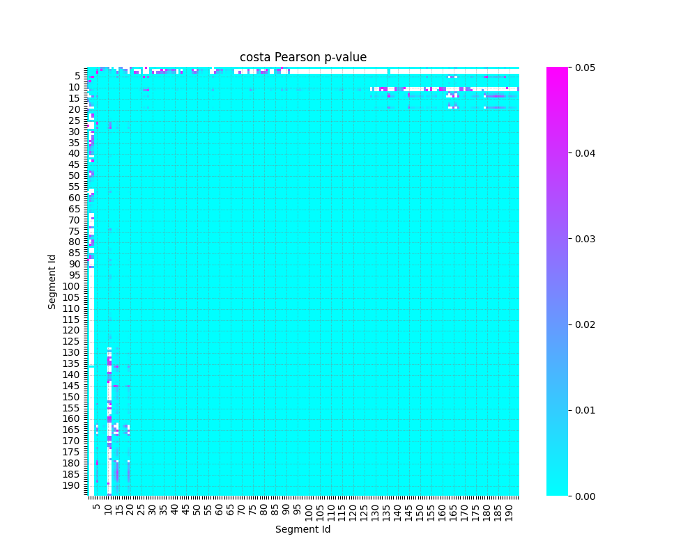